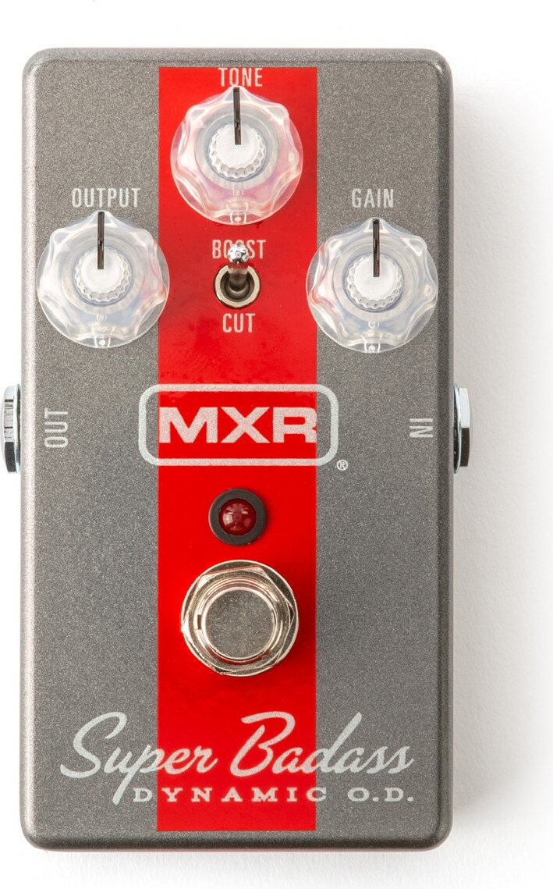
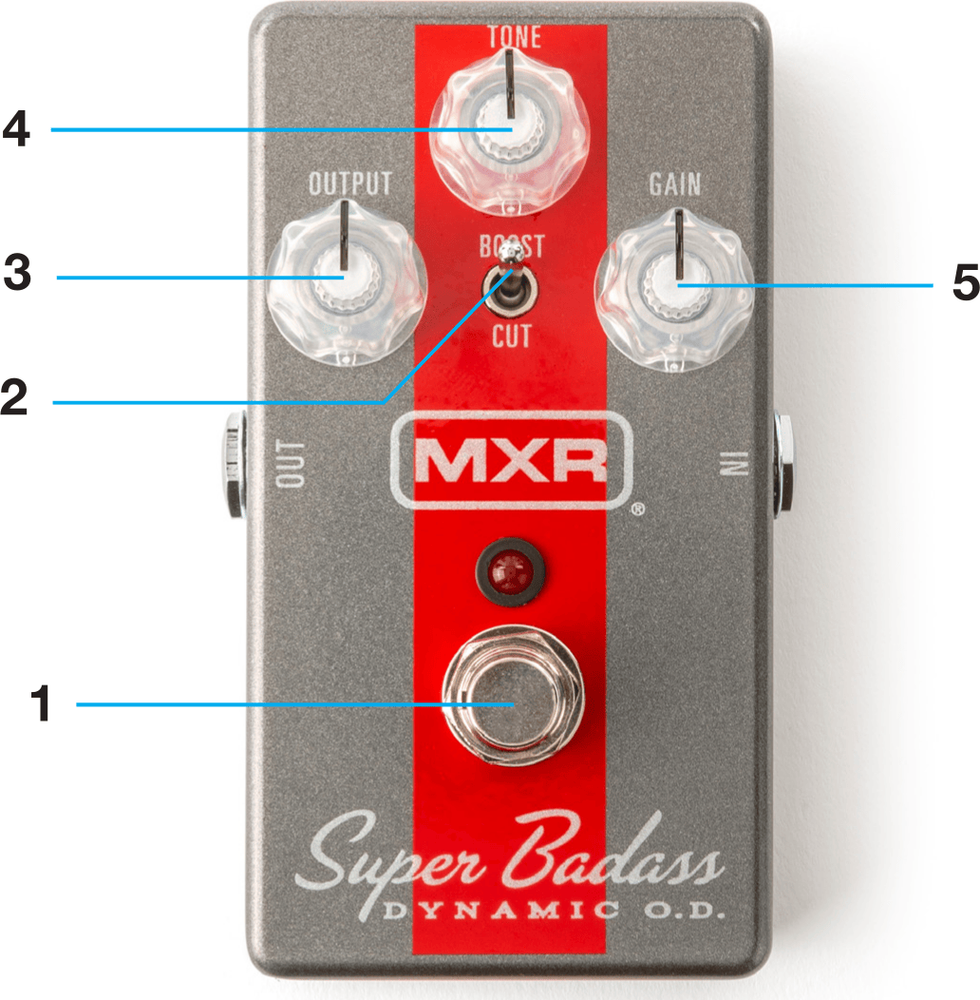

Super Badass
Dynamic O.D.

Welcome
The MXR Super Badass Dynamic O.D. will give any rig as much extra bite as you need while preserving your existing tonal dynamics. With MOSFET clipping under the hood, this pedal’s overdrive is a smooth purr that can be pulled back for a nice, clean boost or cranked into full gear for vintage high-gain grind.
External Controls

- Footswitch toggles effect on/off (red LED indicates on)
- BOOST/CUT switch sets output mode
- OUTPUT knob adjusts overall output level
- TONE knob adjusts overall EQ
- GAIN knob adjusts overdrive intensity
Basic Operation
Power
The MXR® Super Badass® Dynamic O.D. is powered by one 9-volt battery (accessible via battery door on bottom plate), a 9-volt AC adapter such as the Dunlop ECB003/ECB003EU, or an MXR Brick™ Series power supply.
Directions
- Run an instrument cable from your instrument to the M249’s INSTRUMENT jack and another instrument cable from the M249’s AMPLIFIER jack into your amplifier’s input.
- Start with knobs set to 12 o’clock.
- Turn the effect on by depressing the footswitch.
- Use BOOST/CUT switch to select output mode: BOOST mode increases output level and emphasizes the midrange; CUT mode decreases output level.
- Rotate OUTPUT knob clockwise to increase overall volume or counterclockwise to decrease it.
- Rotate TONE knob clockwise for a brighter sound or counterclockwise for a warmer sound.
- Rotate GAIN knob clockwise to increase overdrive intensity or counterclockwise to decrease it.
Specifications
| Input Impedance | > 450 kΩ |
|---|---|
| Output Impedance | < 25 kΩ |
| Bypass | True Hardwire |
| Current Draw | 6 mA |
| Power Supply | 9 volts DC |